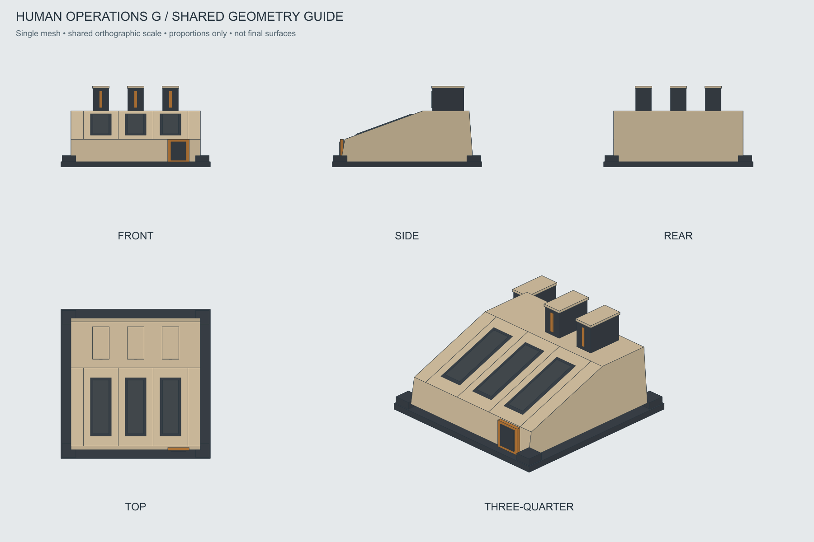

Оперативный центр · G «Рёбра»
Выбран 28 октября 2026. Клиновидный корпус, три аппаратных ребра, три диагностические полосы. Все входные изображения без свечения.
Паспорт моделирования · Файлы для AI-моделирования · OBJ-каркас · История A–H
Нейтральный основной вид

Пять нейтральных ракурсов

Проекции одной геометрии

Отдельное превью рабочего эффекта
Не передавать это превью на текстурирование. Световые волны сдвинуты по фазе, вся геометрия неподвижна. Тайминг условный.
Проверены габариты грубого каркаса; детальная модель, материалы и эффект в игре ещё не созданы.